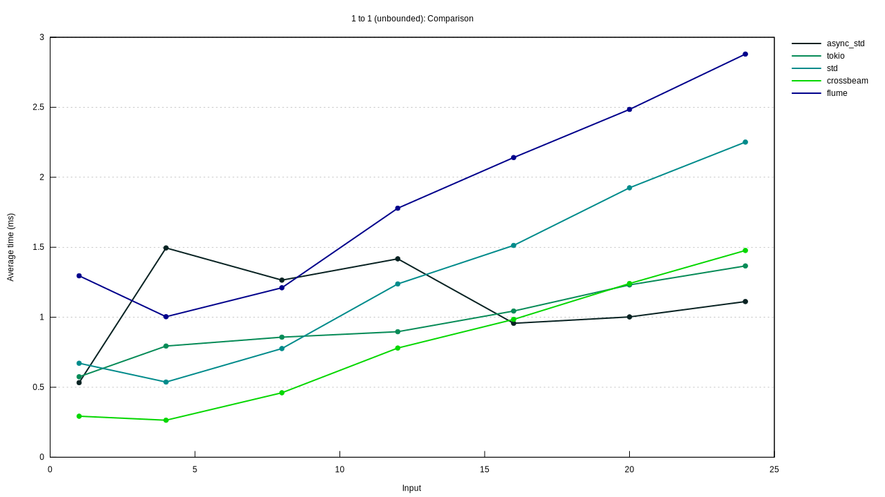

1 to 1 (unbounded)
Violin Plot
{kind=link}
This chart shows the relationship between function/parameter and iteration time. The thickness of the shaded region indicates the probability that a measurement of the given function/parameter would take a particular length of time.
Line Chart
This chart shows the mean measured time for each function as the input (or the size of the input) increases.
1 to 1 (unbounded)/async_std/1
/async_std/1/pdf.svg)
|
/async_std/1/regression.svg)
|
1 to 1 (unbounded)/tokio/1
/tokio/1/pdf.svg)
|
/tokio/1/regression.svg)
|
1 to 1 (unbounded)/std/1
/std/1/pdf.svg)
|
/std/1/regression.svg)
|
1 to 1 (unbounded)/crossbeam/1
/crossbeam/1/pdf.svg)
|
/crossbeam/1/regression.svg)
|
1 to 1 (unbounded)/flume/1
/flume/1/pdf.svg)
|
/flume/1/regression.svg)
|
1 to 1 (unbounded)/async_std/4
/async_std/4/pdf.svg)
|
/async_std/4/regression.svg)
|
1 to 1 (unbounded)/tokio/4
/tokio/4/pdf.svg)
|
/tokio/4/regression.svg)
|
1 to 1 (unbounded)/std/4
/std/4/pdf.svg)
|
/std/4/regression.svg)
|
1 to 1 (unbounded)/crossbeam/4
/crossbeam/4/pdf.svg)
|
/crossbeam/4/regression.svg)
|
1 to 1 (unbounded)/flume/4
/flume/4/pdf.svg)
|
/flume/4/regression.svg)
|
1 to 1 (unbounded)/async_std/8
/async_std/8/pdf.svg)
|
/async_std/8/regression.svg)
|
1 to 1 (unbounded)/tokio/8
/tokio/8/pdf.svg)
|
/tokio/8/regression.svg)
|
1 to 1 (unbounded)/std/8
/std/8/pdf.svg)
|
/std/8/regression.svg)
|
1 to 1 (unbounded)/crossbeam/8
/crossbeam/8/pdf.svg)
|
/crossbeam/8/regression.svg)
|
1 to 1 (unbounded)/flume/8
/flume/8/pdf.svg)
|
/flume/8/regression.svg)
|
1 to 1 (unbounded)/async_std/12
/async_std/12/pdf.svg)
|
/async_std/12/regression.svg)
|
1 to 1 (unbounded)/tokio/12
/tokio/12/pdf.svg)
|
/tokio/12/regression.svg)
|
1 to 1 (unbounded)/std/12
/std/12/pdf.svg)
|
/std/12/regression.svg)
|
1 to 1 (unbounded)/crossbeam/12
/crossbeam/12/pdf.svg)
|
/crossbeam/12/regression.svg)
|
1 to 1 (unbounded)/flume/12
/flume/12/pdf.svg)
|
/flume/12/regression.svg)
|
1 to 1 (unbounded)/async_std/16
/async_std/16/pdf.svg)
|
/async_std/16/regression.svg)
|
1 to 1 (unbounded)/tokio/16
/tokio/16/pdf.svg)
|
/tokio/16/regression.svg)
|
1 to 1 (unbounded)/std/16
/std/16/pdf.svg)
|
/std/16/regression.svg)
|
1 to 1 (unbounded)/crossbeam/16
/crossbeam/16/pdf.svg)
|
/crossbeam/16/regression.svg)
|
1 to 1 (unbounded)/flume/16
/flume/16/pdf.svg)
|
/flume/16/regression.svg)
|
1 to 1 (unbounded)/async_std/20
/async_std/20/pdf.svg)
|
/async_std/20/regression.svg)
|
1 to 1 (unbounded)/tokio/20
/tokio/20/pdf.svg)
|
/tokio/20/regression.svg)
|
1 to 1 (unbounded)/std/20
/std/20/pdf.svg)
|
/std/20/regression.svg)
|
1 to 1 (unbounded)/crossbeam/20
/crossbeam/20/pdf.svg)
|
/crossbeam/20/regression.svg)
|
1 to 1 (unbounded)/flume/20
/flume/20/pdf.svg)
|
/flume/20/regression.svg)
|
1 to 1 (unbounded)/async_std/24
/async_std/24/pdf.svg)
|
/async_std/24/regression.svg)
|
1 to 1 (unbounded)/tokio/24
/tokio/24/pdf.svg)
|
/tokio/24/regression.svg)
|
1 to 1 (unbounded)/std/24
/std/24/pdf.svg)
|
/std/24/regression.svg)
|
1 to 1 (unbounded)/crossbeam/24
/crossbeam/24/pdf.svg)
|
/crossbeam/24/regression.svg)
|
1 to 1 (unbounded)/flume/24
/flume/24/pdf.svg)
|
/flume/24/regression.svg)
|